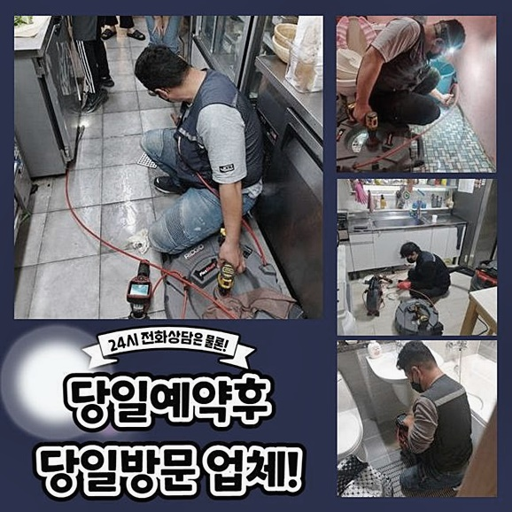
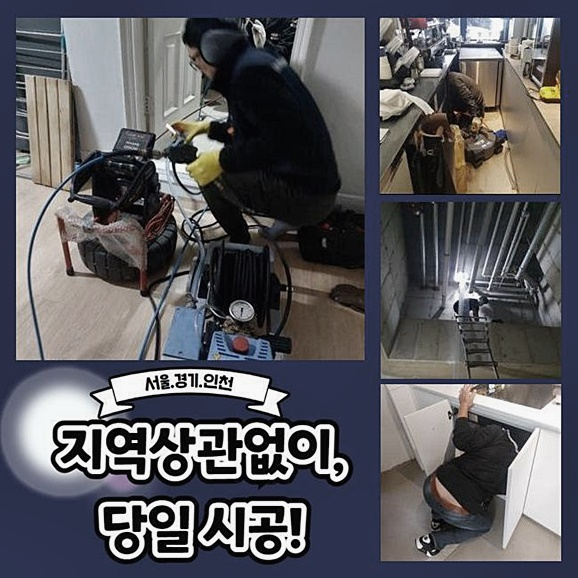
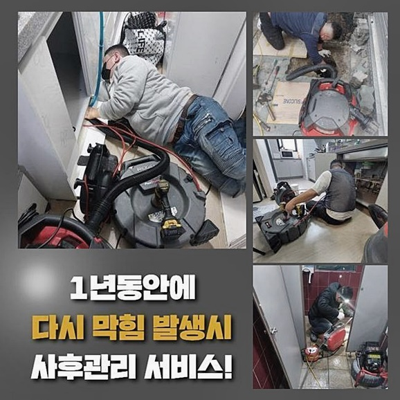
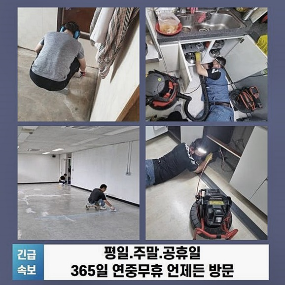
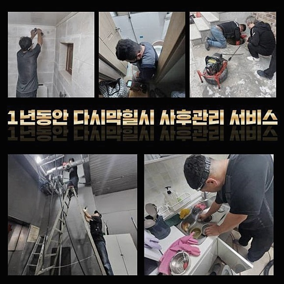
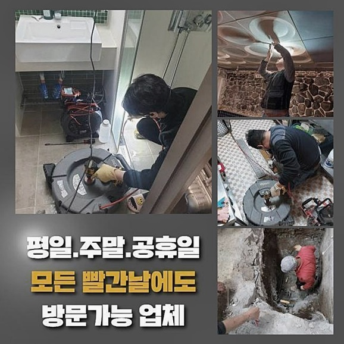
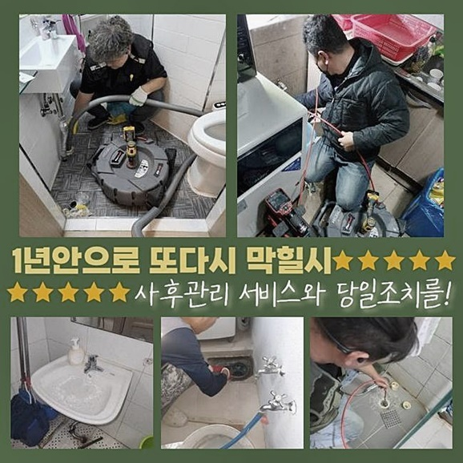

🏠 인천 대곡동욕실역류 왕길동 배관뚫기 설비업체
인천 하수구막힘 전문 시공 후기

📋 작업 개요
- 위치: 인천
- 서비스 유형: 하수구막힘, 배관막힘, 역류해결, 뚫는업체, 배관청소, 고압세척, 악취차단
- 작업 일시: 2024. 9. 27. 18:55
- 업체명: 하수구수사대 (010-5615-2118)
🔍 문제 상황
인천 대곡동욕실역류 왕길동 배관뚫기 설비업체
오늘 소개할 곳은 다수의 호실이 있는 건물에서 일어나게 된 하수구 막힘이에요
온오프라인에서 살 수 있는 셀프도구들을 이용해서 스스로 작업을 지속하셔도 되겠지만 전문공에게 작업을 맡기시는 게 보다 안전한 결과물을 얻을 수 있습니다
하수가 정상 기능하지 못하다면 초반에는 손실의 크기가 크지 않다 싶겠지만 점차 방치기간이 길어질 수록 엄청난 규모의 사안으로 전락할지도 모르니 초기대응이 중요해요
내부에서 물이 튀어나오면 하수관로 안쪽에 오염원이 다량 누적된 것을 말하니 민첩하게 대응책을 세우는 자세가 필요해요!
내부에 더러운 이물을 제거하지 않으면 세균의 확산과 냄새같은 여러 복합적인 문제들이 줄지어 나타날 수 있습니다
전에 부르셨던 업체에서는 결국 실패하고 말아서 저희 쪽에 다시 재시공을 담당해 주실 수 있겠냐고 거듭 부탁하셨습니다
많이 기다리신만큼 빠른 대처가 절실하실 것이라는 부분에 공감이 되어 작업지로 얼른 달려가서 현재 상황을 살펴보았습니다
시설물을 쓰시며 인지하셨던 잘못된 점들과 발생 시기에 대해 최대한 자세히 이야기 해주시면 이를 기반으로 계획 설정의 난이도가 완화됩니다
타 업체에서 실패했던 상황이므로 앞선 내용을 같이 알려주시는 것 역시 탁월한 결과물을 낼 수 있는 해결의 단초가 되기도 해요

🔎 원인 분석
💡 전문가 진단: 정밀 진단 장비를 사용하여 슬러지의 고착 여부를 판명하고 타격/세척 작업을 실시했습니다.
본격적으로 실제 진단을 해보니 건물이 공용으로 쓰는 중앙 배관과 여러 잔가지들이 노폐물이 차서 철저히 봉인된 상태였어요
원인의 철저한 규명을 위해서 하수구의 부속들을 탈거해보니 악취가 확 끼쳐왔고 이용하고 남은 생활하수들도 더욱 비위생적으로 오염되어가는 중이었죠!
사안이 더 확대되기 이전에 급한 불부터 꺼야한다고 생각했고 찰박거리는 물을 뽑아내기 시작했어요
꽉 막힌 물길을 트이게 해주니 서서히 하수관로가 열리는 국면을 맞이했습니다
겉으로 보이는 오염원들을 일일이 걸어서 없애줬지만 그 밑에는 가늠할 수 없는 양의 노폐물들이 정착해 있을 것이었죠
이물질로 가득찬데다 물상태도 탁해서 관측이 난감했기에 석션 기기로 고인 대상을 빨아 없앴습니다
손쉽고 간단한 막힘 레벨이면 흡입 방식을 통한 업무만 실시하더라도 본래의 기능이 되살아나요
하수구는 물이 시 관로로 배출되는 메인 이동 경로로써 물과 섞여서 들어가는 잔여물이나 오래 고여있던 석회물질이 점차 쌓이다가 중단이 초래되고 마는 것입니다
배수로의 고장을 차단하려면 표면에서 막아주는 망사를 고정시켜줘서 작은 오염물이라도 걸러지도록 대비책을 세우거나 숙련공을 호출하여 배관 건강을 제때 진단하고 항시 모니터링하면서 상태를 봐줘야 합니다
세밀한 곳도 관측되는 내시경으로 내부 현황을 검진하고 이물질의 구성요소를 보면서 본질적인 원인을 파악해야 명확한 작업의 노선을 픽스할 수 있게 됩니다
하수구의 깊은 곳까지 모조리 미진한 영역 없이 진단해서 향후 나타날 위험까지도 방어할 수 있었습니다

🔧 작업 과정
소규모의 현장이라도 총체적인 장비들을 철저히 준비해가니 특이한 케이스거나 노후가 심각한 하수관 내에서도 순조롭게 탐사를 펼칠 수 있으며 수습도 편안하게 진행을 할 수 있는거죠
본의 아니게 유입된 찌꺼기들이 대규모로 문제를 야기함을 인지했고 대부분의 폭이 가로막히다보니 이 하수구의 불통 문제가 유발된 게 분명해 보였습니다
물로 인해 풀어지지도 않고 거센 물살도 버티면서 고정력을 보이는 이물질이 착 붙어있다면 파이프 청소를 받지 않고는 극복이 힘든 게 사실입니다
고압 물대포를 쏘는 작업은 주의 깊은 사용이 필수불가결하므로 믿을만한 전문가에게 맡기는 게 효율적이니 추천하고 싶습니다
부서지거나 다치기 쉬운 얇은 튜브에는 강도 높은 타격감을 주면 곤란하므로 고강도 시공이 가능할 지 여부를 객관적으로 평가하고 있습니다
저희 작업을 받기 전에는 바깥에 있는 메인 배관의 잘못이라는 점은 전혀 예측 불가였고 타업체도 실내 작업만 이어갔다고 합니다
합리성을 검토하고 착수한 관로의 고압세척 공정의 경우는 가로막고 있는 대형 폐기물들을 정리해서 물 배출이 쉽게 달성될 수 있도록 명쾌한 차이를 만들어냈습니다
수많은 답답한 하수관의 통수를 만들어오며 쌓인 노하우로 시시각각 상황에 맞게 시공의 플랜을 짜며 개선되길 고대하시는 고객님께도 찬찬히 알려드리고 있어요
원활하게 하수구 설비를 쓰시려면 지속적인 관심을 두어야 하는데 작은 소지품이나 이물질들을 생각 없이 폐기하지 않도록 경계하는 자세가 필요해요
작은 크기의 입자라도 별다른 고민 없이 흘려버리면 거대한 집합체로 똘똘 뭉쳐서 간과하기 어려운 크기로 성장할지도 모릅니다
작업 전 막힌 측면을 볼 때 제한된 장소 내에서만 침전물이 붙어있다면 휘어지는 코일 스프링이나 샤프트 기기와 같은 전문적 장치만 사용해서도 수습을 해줄 수 있습니다
침전된 물질의 절대적 양이 높은 경우라면 배관 속에 다수의 오염물질이 산적해 있을 수 있으며 이는 한순간의 사고가 아니라는 사실로도 볼 수 있어요
어느정도 막혀있는 지와 배관 사양이나 컨디션처럼 현재 처한 상황을 잘 보고 특화된 업무를 골라야만 정상적인 기능성을 되찾아올 수 있는 것이죠
똑같은 오류가 나타나면 스트레스도 늘어나고 시간이나 금액적인 낭비도 함께 떠안으셔야 할테니 제대로 하수구 클리닝을 완수하려 최선을 다하고 있습니다
해당 시설의 컨디션을 잘 살핀 후 꼭 들어가야할 작업만 선정하고 쓸데없는 단계는 과감히 생략하니 전체 시공비용을 아낄 수 있을테니 부담이 경감되실 거예요
장치에 대한 제어를 원만하게 진행하는 고압수 세척 절차로 순식간에 깨끗하게 탈바꿈되어 막히는 기색없이 물이 이동합니다
이 작업공정을 설명드리면 물을 응축하여 발사해서 불청객같은 노폐물 덩어리를 통쾌하게 분해해 주며 돌처럼 압착이 되어버린 대상물이나 접착력이 있는 불순물도 말끔하게 없애버릴 수 있어요


✅ 작업 완료
시작 시의 경비가 제법 들테지만 수차례 내부를 정돈하는 전문절차를 빈번히 되풀이하는 것 보단 꼼꼼한 1회의 클리닝으로 배관을 쾌적하고 맑게 이어갈 수 있기 때문에 장기적인 투자로 보시면 됩니다
하수구가 당장 중단되면 무기한으로 단수가 되는 부분도 성가시겠지만 더 복잡한 악취문제도 예측 밖으로 점점 더 극심해질 것이므로 일상을 완전히 붕괴시켜 버려요
쨍쨍한 날씨를 찾아볼 수 없는 고온다습한 환경 속에선 하수 기능의 상실로 인한 고통스러움은 훨씬 늘어날 수 밖에는 없어요
내버려두면 통로가 생길거라 생각하여 소홀하게 대응을 한다거나 매일같이 뚫어뻥으로 물을 나아가게 해주신다면 머지않아 큰 막힘이 도래할 겁니다
은근히 제대로 청소하기 힘든 하수시설을 관련 경험이 많은 전문가에게 맡겨서 말끔하게 낫게 만드시기 바랍니다




⚠️ 하수구 배관 막힘 예방 및 관리 가이드
- ✅ 머리카락, 비닐, 물티슈 등 물에 분해되지 않는 이물질은 하수구 유입을 절대 금지해 주세요.
- ✅ 하수구 거름망을 씌우고 모여진 이물질은 주기적으로 쓰레기통에 바로 비워주셔야 합니다.
- ✅ 배관 노후가 심할 경우 이물질이 더 쉽게 걸리므로 주기적인 배관 세척(고압세척 등)을 권장합니다.
- ✅ 작업 후 1년 이내 재발 시 하수구수사대에서 무상 A/S 보증 서비스를 제공합니다.
💡 핵심 정리
- 확실한 장비 작업(내시경 점검 및 샤프트 스케일링)으로 원인을 뿌리 뽑습니다.
- 작업 후 1년 이내에 동일한 부위 재발 시 100% 무상 A/S 서비스를 보장합니다.
- 서울 · 경기 · 인천 전 지역에 24시간 언제든 긴급 출동할 수 있도록 항시 대기 중입니다.
❓ 자주 묻는 질문 (FAQ)
🚨 인천 하수구막힘 문제로 고민이신가요?
정확한 원인 진단과 확실한 시공으로 재발 없는 해결을 약속드립니다.
24시간 긴급 출동 | 서울 · 경기 · 인천 전지역 | 1년 내 재발 시 무상 A/S